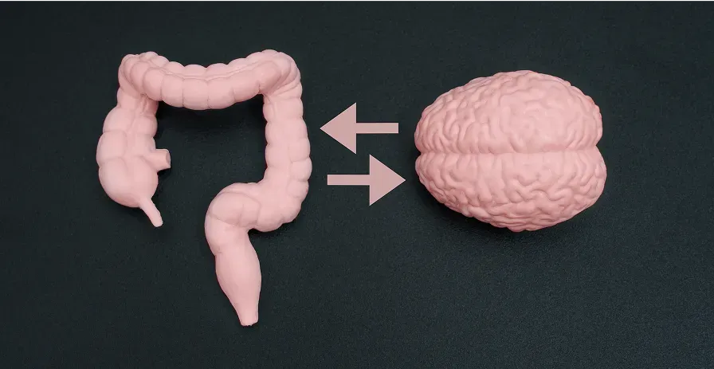

Kronärtskocka
Kronärtskockeextrakt kan hjälpa till med fettsmältning och minska tyngdkänsla efter måltider. Stödjer gallproduktionen och bidrar till smidigare matsmältning.
Stöds av EU-godkända hälsopåståenden
Balansera stödjer Tarm–Hjärna-axeln med matsmältningsenzymer, probiotika och naturliga växtextrakt — så att du kan känna dig som dig själv igen.
Forskare kallar magen för "den andra hjärnan" — med god anledning. Den innehåller över 100 miljoner nervceller och producerar 95% av kroppens serotonin; signalsubstansen som reglerar humör, sömn, energi och fokus. När tarmen är i obalans skickas varningssignaler direkt till hjärnan — och det märks som trötthet, hjärndimma och nedstämdhet.
Balansera är utvecklat av ett skandinaviskt team av näringsexperter som arbetar med de djupare orsakerna — inte bara symtomen. En 3-i-1-formulering med matsmältningsenzymer, probiotika och växtextrakt som stödjer hela Tarm–Hjärna-axeln inifrån och ut.

Varje ingrediens är noga utvald — inte bara för att lugna magen, utan också för att stödja din mentala hälsa. Inga fyllmedel, inga hårda kemikalier.
Kronärtskockeextrakt kan hjälpa till med fettsmältning och minska tyngdkänsla efter måltider. Stödjer gallproduktionen och bidrar till smidigare matsmältning.
Ingefära kan lugna magen och verka mot uppblåsthet. Traditionellt använt för att lindra magbesvär och främja mag-tarmkanalens komfort.
Kanel kan minska inflammation och förbättra mental koncentration. Bidrar till att reglera blodsockret, vilket stödjer stabil energi och fokus.
Rabarber stödjer mild och regelbunden matsmältning. Traditionellt använt för att främja tarmens naturliga rörelser utan obehagliga biverkningar.
Probiotika kan återställa balansen i tarmfloran. Stödjer immunförsvaret, humöret och serotoninproduktionen via Tarm–Hjärna-axeln.
Matsmältningsenzymer kan hjälpa kroppen att bryta ner maten mer effektivt, minska uppblåsthet och tyngdkänsla — och lindra det obehag som många upplever efter måltider.
Verifierade recensioner från Balansera-kunder i Sverige. Individuella resultat kan variera.
"Jag tog det mot uppblåsthet – men det bästa var hur klart jag började tänka. Det hade jag verkligen inte räknat med. Blev ärligt talat förvånad."
"Efter att ha testat allt – piller, teer, probiotika – var jag nära att ge upp. Men Balansera var det enda som faktiskt fungerade. Hjärndimman? Borta."
"Jag kände mig alltid tung och nedstämd efter maten. Sedan jag började med Balansera känner jag mig lättare, gladare och mer fokuserad."
"Redan vecka två var både uppblåstheten och hjärndimman borta. För första gången gjorde något verkligen skillnad för mig."
Tarm–Hjärna-axeln är ett av de mest undersökta områdena inom modern neurogastroenterologi. Forskning visar att tarmen och hjärnan kommunicerar via vagusnerven, immunsystemet och hormonella signaler — och att över 80% av signalerna faktiskt går från tarmen till hjärnan, inte tvärtom. Tarmen producerar upp till 95% av kroppens serotonin, det ämne som primärt förknippas med reglering av humör, sömn och välmående. När tarmfloran (mikrobiomet) är i obalans — till följd av stress, processad mat, antibiotika eller åldrande — kan det yttra sig som trötthet, hjärndimma, humörsvängningar och koncentrationssvårigheter. Naturliga åtgärder som stödjer tarmfloran kan bidra till att återställa denna förbindelse.
Probiotika kosttillskott är levande mikroorganismer som kan bidra till att återskapa och upprätthålla en sund tarmflora. I Sverige upplever många vuxna tecken på tarmflorans obalans — från återkommande uppblåsthet och orolig matsmältning till det som många beskriver som ihållande hjärndimma och låg energi. Forskning på probiotika-stammar som Lactobacillus och Bifidobacterium visar att de kan bidra till immuniteten, minska inflammation och stödja produktionen av neurotransmittorer. För svenskar som är vana vid en kost med mycket processad mat, stress och användning av antibiotika kan tillskott med probiotika utgöra ett meningsfullt stöd till kroppens naturliga balans.
Matsmältningsenzymer är proteiner som produceras naturligt i kroppen för att bryta ner mat i mag-tarmkanalen — proteaser för proteiner, lipaser för fetter och amylaser för kolhydrater. Med åldern, vid kronisk stress eller vid vissa kostvanor kan produktionen av dessa enzymer minska, vilket kan resultera i otillräcklig matsmältning, tyngdkänsla efter måltider och ökad uppblåsthet. Tillskott med matsmältningsenzymer kan i sådana fall stödja kroppens naturliga processer och bidra till en mer effektiv och bekväm matsmältning. EU-godkända hälsopåståenden bekräftar exempelvis att kalcium bidrar till matsmältningsenzymernas normala funktion.
Örter har i århundraden använts i traditionell medicin för att stödja matsmältningen — och nyare forskning bekräftar många av dessa praktiker. Kronärtskockeextrakt är dokumenterat för sin förmåga att stödja gallproduktionen och hjälpa till med fettsmältning. Ingefära är välkänt mot illamående och uppblåsthet, och forskning tyder på att det kan påskynda magtömning. Kanel undersöks för sin potentiella roll i blodsockerreglering och antiinflammatorisk aktivitet, medan rabarber traditionellt använts för att främja regelbunden och skonsam tarmfunktion. Kombinationen av dessa växtextrakt i ett tillskott representerar en holistisk approach till matsmältningshälsa som stöds av vetenskaplig litteratur.
Många svenskar upplever att uppblåsthet efter måltider och mental hjärndimma uppträder tillsammans — och det är inte slumpmässigt. Båda symtomen kan ha samma rot: en tarm som kämpar med obalans i mikrobiomet, otillräcklig enzymaktivitet eller låggradig inflammation. När tarmen skickar "larmsignaler" via vagusnerven kan hjärnan reagera med nedsatt kognition, koncentrationssvårigheter och trötthet. Att adressera tarmens tillstånd — istället för att behandla hjärnan och magen som två separata problem — kan vara den mer effektiva vägen till varaktig förbättring. Det är precis denna approach som Balansera är formulerat för att stödja.
Marknaden för matsmältningskosttillskott i Sverige växer, och utbudet kan vara överväldigande. När man väljer ett tillskott är det värt att lägga märke till: om det innehåller en kombination av verkningsmekanismer (enzymer, probiotika, örter) istället för en enda ingrediens; om det är tillverkat enligt EU:s kvalitetskrav; om det finns en stark returgaranti som tecken på tillverkarens förtroende för produkten; och om ingredienserna stöds av tillgänglig vetenskaplig litteratur. Kosttillskott är inte medicin och ersätter inte läkarvård. Men för många svenskar utgör de ett meningsfullt komplement till en hälsosam livsstil — och kan bidra till den dagliga komfort och välmående som en välfungerande matsmältning ger.